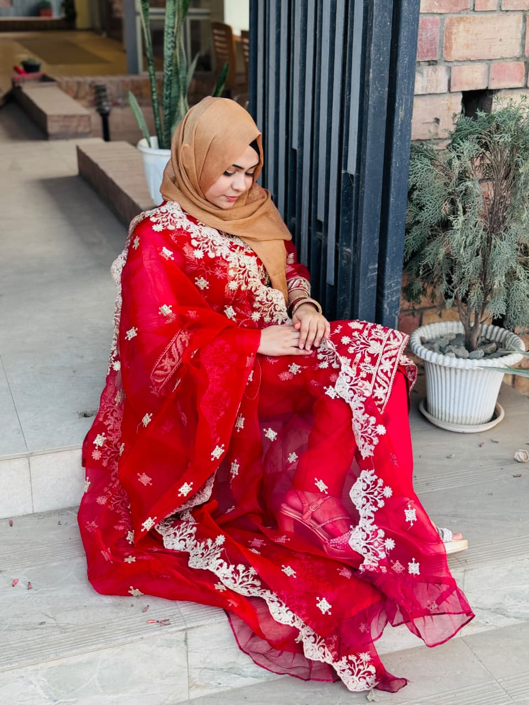

CSE STUDENT · DIGITAL STRATEGIST · ENTREPRENEUR
3rd year Computer Science & Engineering student at Northern University of Business and Technology, Khulna. I specialize in designing scalable systems, data-driven growth strategies, and intelligent digital solutions. Founder of a growing online business, building a 20,000+ member community.
01 — About
I am a Computer Science & Engineering student driven by system thinking, scalability, and precision—maintaining a perfect GPA 5.00 in both SSC and HSC. Currently in my 3rd year, my academic focus includes algorithm design, full-stack development, and building efficient, production-ready systems.
Beyond academia, I operate as a digital ecosystem builder. As the founder of a Tisa Sultanas' Cake khulna, I architected and scaled a 20,000+ member community using data-backed growth strategies, behavioral analysis, and engagement optimization. I also manage the Khulna Food Reviewers Group, where I design content systems that maximize reach, retention, and trust.
As a Digital Marketing Manager, I engineer growth pipelines—not just content. From algorithm-aware distribution strategies to conversion-focused campaigns, I combine computational logic with creative storytelling. My training as a certified makeup artist — under an International makeup artist, USA — further strengthens my ability to craft high-impact visual branding.
02 — Education
Northern University of Business and Technology, Khulna, Bangladesh
CGPA: — / 4.00 (Expected Graduation: 2027)
Driven by a deep curiosity for technology and innovation, I am pursuing a comprehensive curriculum that blends software engineering principles, modern web technologies, and artificial intelligence. My academic journey is centered on building scalable solutions, strengthening problem-solving capabilities, and applying data-driven thinking to real-world challenges. Additionally, I explore the intersection of technology and digital marketing, understanding how intelligent systems can enhance user engagement and business growth.
Khulna Govt. Girls College, Khulna, Bangladesh
GPA: 5.00 (2022)
Completed with distinction in the Science stream, with a strong foundation in Mathematics, Physics, and Computer Science—shaping analytical thinking and logical reasoning essential for advanced computing disciplines.
Khulna Govt. Girls College, Khulna, Bangladesh
GPA: 5.00 (2020)
Achieved academic excellence with a focus on core scientific fundamentals, building the groundwork for a future in technology, engineering, and innovation.
03 — Skills
04 — Research
My primary research focuses on Fake News Detection using Natural Language Processing (NLP)—addressing one of the most critical challenges in modern digital ecosystems. I design intelligent classification systems capable of identifying misleading, biased, or false information from large-scale textual data.
This involves implementing supervised machine learning models, advanced text preprocessing pipelines, and feature extraction mechanisms to enhance predictive accuracy. I work with NLP techniques such as tokenization, sentiment analysis, and contextual understanding, alongside deep learning approaches to improve model robustness and real-world adaptability.
In parallel, I explore digital community behavior—leveraging real-world data from a 20,000+ member ecosystem—to analyze how trust signals, algorithmic reach, and engagement patterns influence information credibility and user decision-making.
05 — Achievements
Perfect GPA 5.00 in both Secondary and Higher Secondary examinations. Recognized for outstanding performance in Science stream.
Founded and scaled an online business community from zero to 20,000+ members. Engineered data-backed growth strategies, engagement optimization, and trust-building systems.
Trained under an internationally recognized makeup artist from USA. Specialized in bridal and creative makeup, visual branding, and high-impact aesthetics.
Successfully built and managed a digital-first business with a dedicated Facebook page and 20k+ member community. Focus on brand building, customer trust, and scalable engagement.
06 — Poetry
07 — Connect
Open to collaborations in software development, AI research, digital marketing, and creative ventures. I respond within 24 hours.
snehanabila49@gmail.com